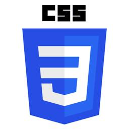
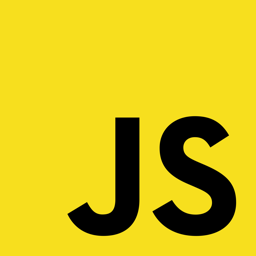

FRONT-END DEVELOPER
Mengubah ide menjadi tampilan website modern dan interaktif. Menyatukan desain dengan kode untuk menghasilkan produk digital yang memukau.

// 00 ABOUT ME
Saya Andri Saputra, seorang Junior Front-End Developer dengan kemampuan membangun antarmuka web menggunakan HTML5, CSS3, Javascipt, dan React. Saat ini telah menyelesaikan bootcamp dan sedang aktif mencari pekerjaan di industri teknologi.
Perjalanan saya menuju Web Development berawal dari rasa penasaran tentang bagaimana website bekerja dan dikembangkan, lalu saya memutuskan untuk mempelajari dan membuatnya sendiri. Sebagai career switcher, saya membawa perspektif yang berbeda: ketelitian dari pengalaman administrasi, kemampuan koordinasi lintas tim dari pengalaman lapangan, serta orientasi pada detail yang langsung relevan dalam kolaborasi tim pengembangan.
"Latar belakang yang beragam bukan hambatan, melainkan keunggulan yang membentuk cara saya berpikir, berkomunikasi, dan berkolaborasi dalam tim.
Saya percaya bahwa seorang developer yang baik tidak hanya menulis kode, tetapi memahami kebutuhan pengguna dan konteks bisnis di balik sebuah produk, dan itu lah yang ingin saya buktikan.
LOCATION
Cipayung, Jakarta Timur, Indonesia
CURRENT STATUS
Fresh Graduate bootcamp FSD Harisenin.com, Batch 18, Carrier Path Front-End Developer
SOFT SKILLS
Komunikatif, Adaptif, Pemecahan masalah, Berorientasi pada detail, Ketelitian, Fleksibel, Koordinasi lintas tim, Manajemen dokumen
MISSION
Berkontribusi sebagai Junior Front-End Developer dan terus bertumbuh dalam membangun produk web yang berdampak
// 01 PROJECTS


Skills
Front-End Development
Merancang dan membangun tampilan web yang responsif dan interaktif menggunakan HTML, CSS, dan JavaScript.
Tools & Workflow
Menggunakan VSCode sebagai lingkungan pengembangan utama, Git dan GitHub untuk version control serta kolaborasi, dan Netlify untuk deployment.
Learning Path
Mengembangkan kemampuan di bidang JavaScript dan mulai menjelajahi framework modern untuk membangun aplikasi web yang dinamis.
Tools & Technologies


Get In Touch
Andri Saputra
andri.saputra25021@gmail.com
Cipinang Besar Utara, Kecamatan Jatinegara,
Kota Jakarta Timur,
13410